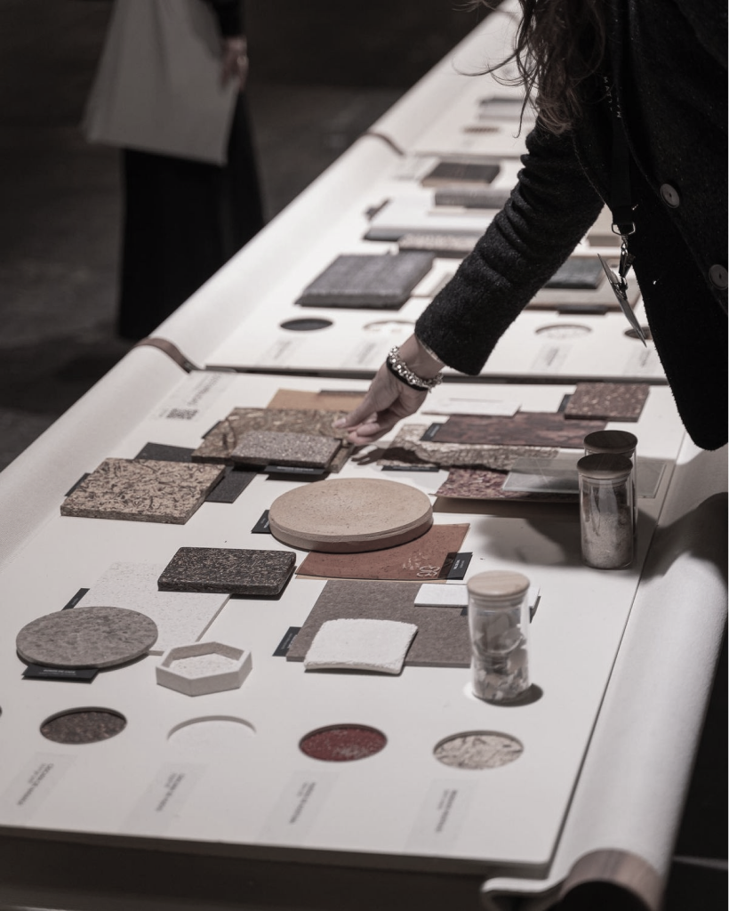
Research
감으로 작업하지 않는다
기록하고, 비교하고, 반복하며 기준을 만든다
Creation is Judgment.

Loading object…
Creation is Judgment
Guardian Ring

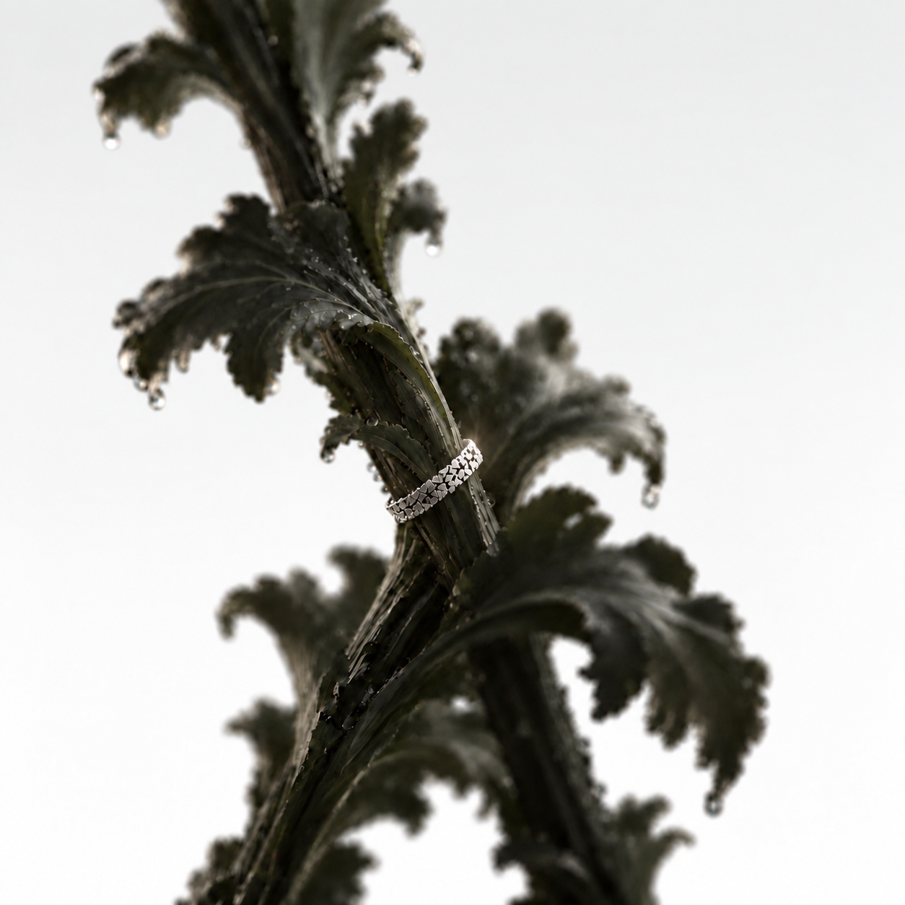
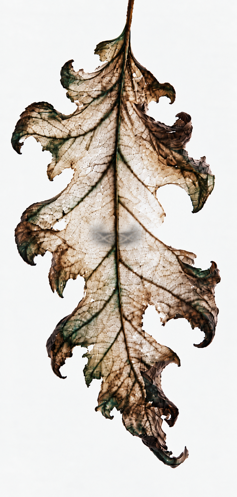
Guardian Ring Series
Eye
Knot
labyrinth
and more
Acanthus takes root, Nomad moves
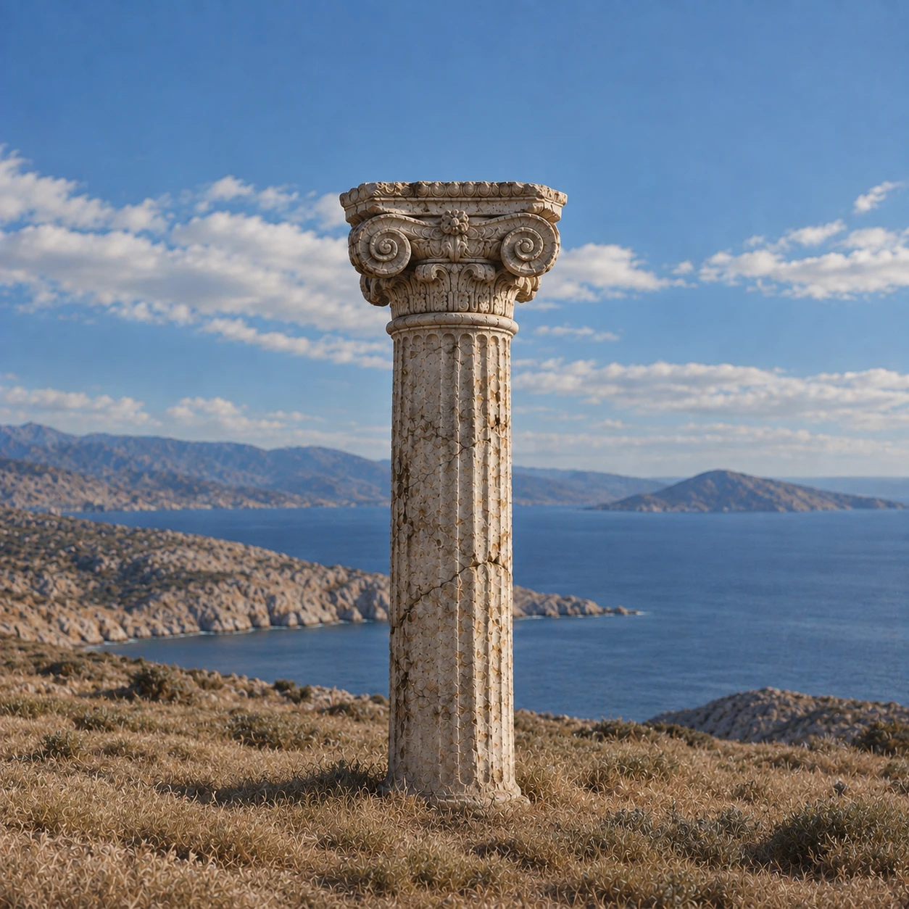

문화마다 다른 형태 속에서 반복되는 인간의 상징을 연구한다
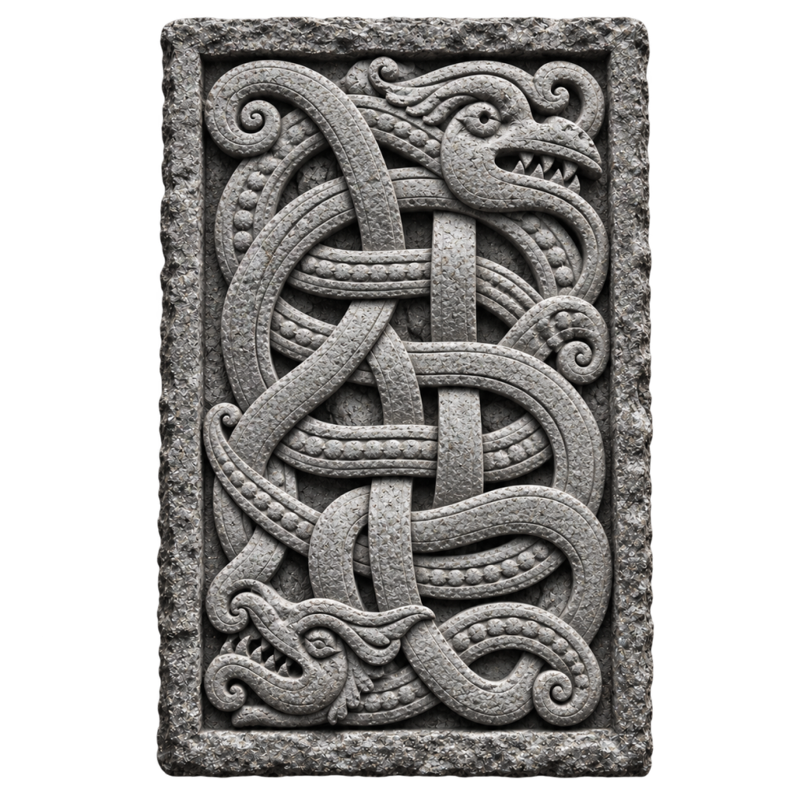
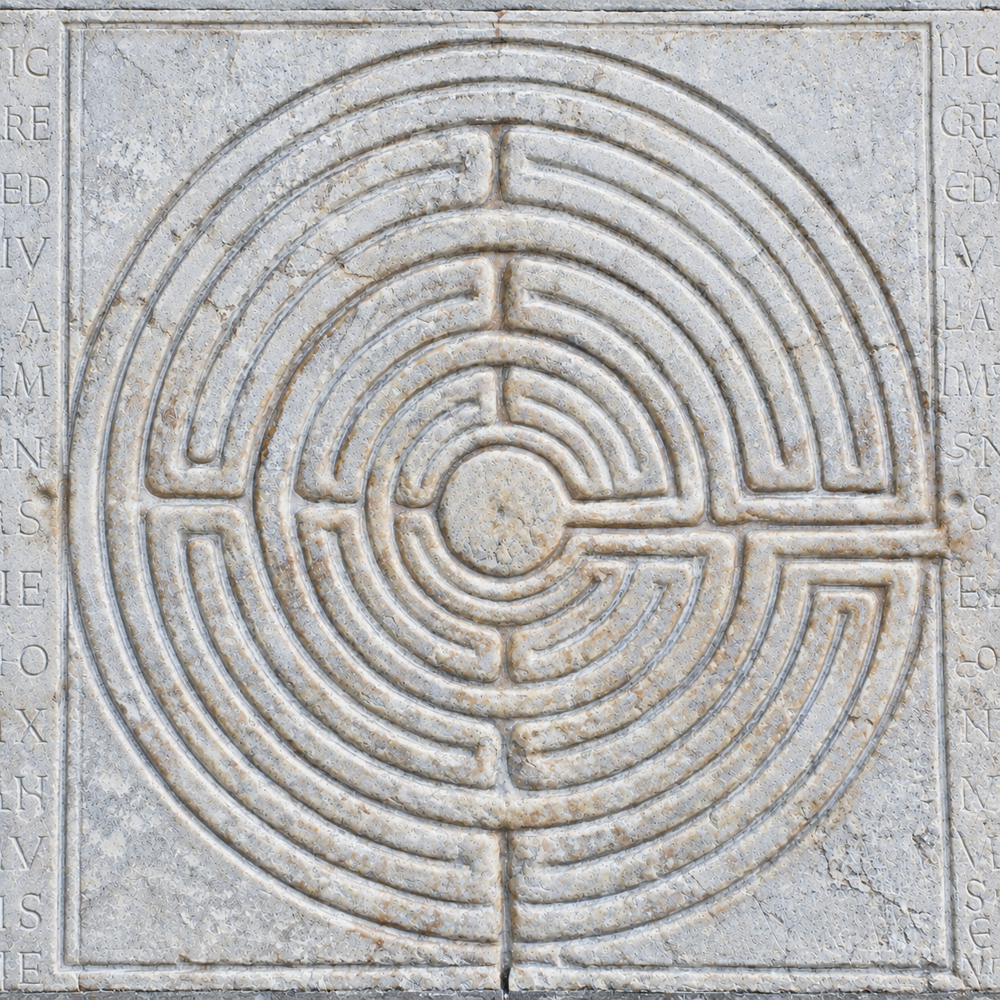
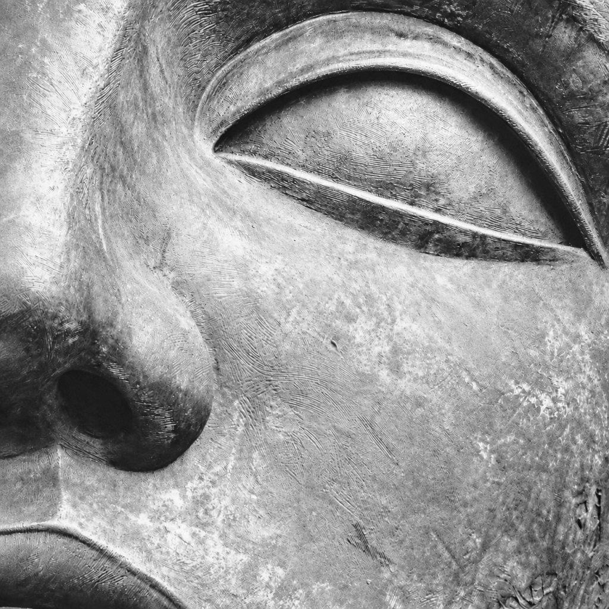
EYE 심볼
EYE 심볼에 대한 자세한 디스크립션
EYE 심볼에 대한 자세한 디스크립션 두줄
Knot 심볼
Knot 심볼에 대한 자세한 디스크립션
Knot 심볼에 대한 자세한 디스크립션 두줄
Labyrinth 심볼
Labyrinth 심볼에 대한 자세한 디스크립션
Labyrinth 심볼에 대한 자세한 디스크립션 두줄
좋은 형태는 발명되지 않는다
발견되고, 선택되고, 정제된다
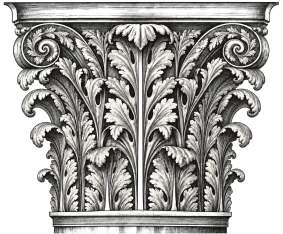
Acanto Selva기술은 공유된다. 판단은 축적된다

감으로 작업하지 않는다
기록하고, 비교하고, 반복하며 기준을 만든다
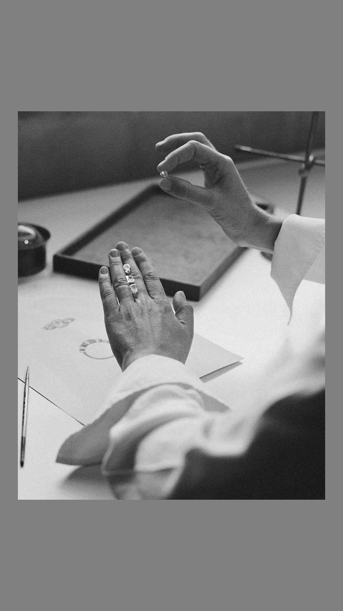
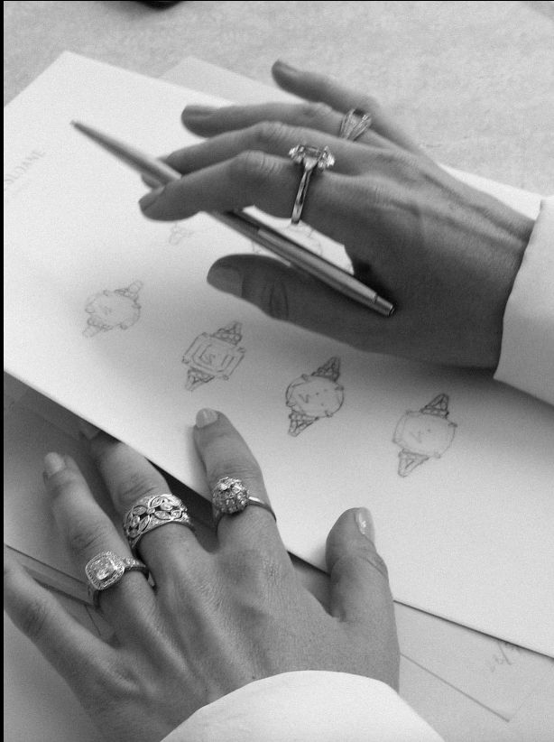
ACANTO SELVA의 창작은
무언가를 무조건 새롭게 만드는 일이 아니다.
우리는 판단의 기준을 만든다
오래 살아남은 형태와 상징을 다시 바라보고,
그중 지금도 유효한 의미와 아름다움을 판단하여
오늘의 오브제로 만드는 일이다.
첫 번째 컬렉션이 곧 공개됩니다
26.12.34